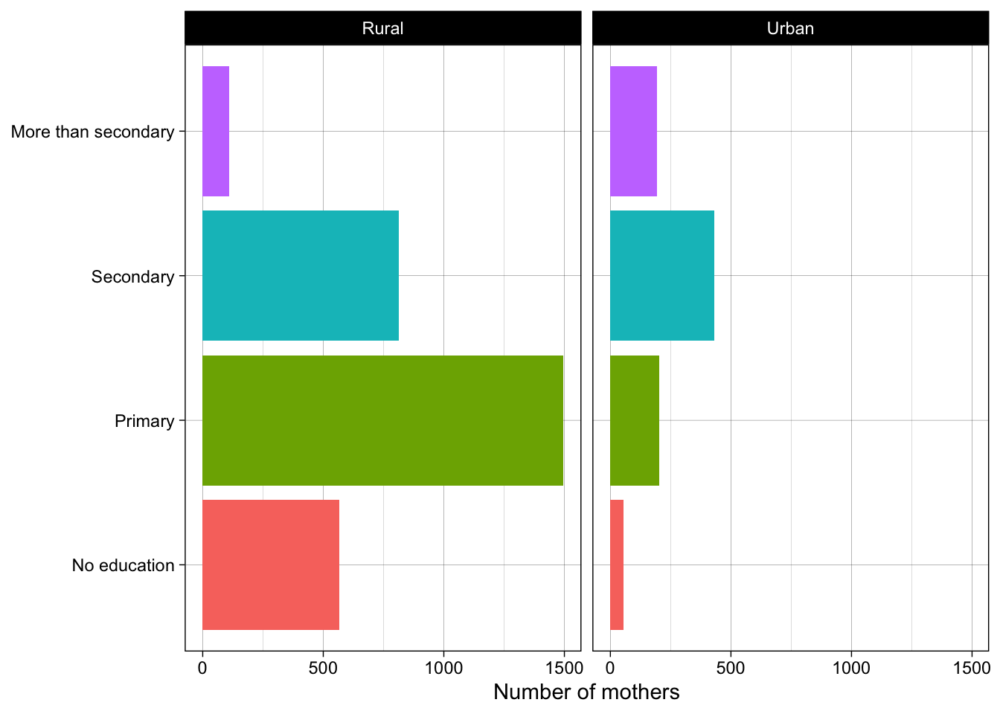
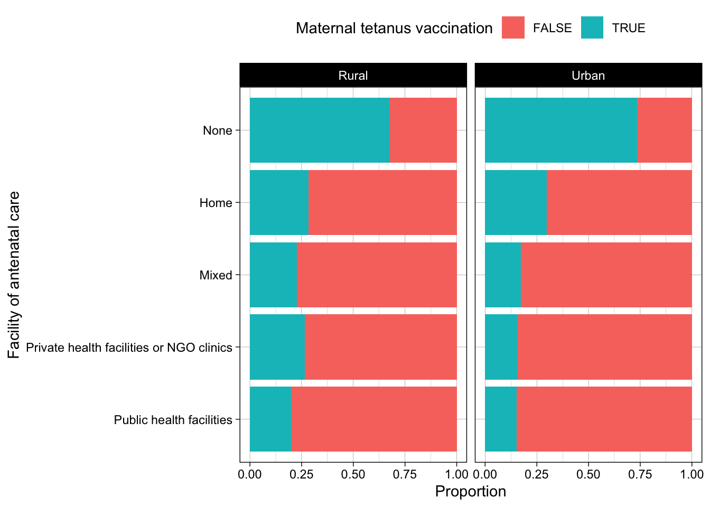

Maternal tetanus vaccination
Code
library(tidyverse)
library(gtsummary)
library(here)Code
surveys4 <- readRDS(here("data/surveys4.rds"))Plots
Mothers’ education attainment
Code
surveys4 |>
ggplot(aes(y = education, fill = education)) +
geom_bar(show.legend = FALSE) +
facet_wrap(vars(residence)) +
labs(x = "Number of mothers", y = NULL) +
theme_linedraw()
Maternal tetanus vaccination by wealth quintile
Code
surveys4 |>
ggplot(aes(y = ancplace, fill = tetanus_vacc)) +
geom_bar(position = position_fill()) +
facet_wrap(vars(residence)) +
labs(x = "Proportion", y = "Facility of antenatal care",
fill = "Maternal tetanus vaccination") +
theme_linedraw() +
theme(
legend.position = "top"
)
Characteristics of mothers and their maternal tetanus vaccination status
Code
var_labels <- c(
agegrp = "Age in years",
birth_order_last_child_grp = "Birth order of last pregnancy",
state_region = "State or region of residence",
residence = "Urban or rural residence",
education = "Highest education level of mothers",
employ = "Mother's occupation",
wealth = "Quintiles of mother's wealth index",
get_help_permission = "Getting medical help for self: getting permission to go",
person_decides_healthcare = "Person who usually decides on woman's healthcare",
get_help_not_go_alone = "Getting medical help for self: not wanting to go alone",
get_help_money = "Getting medical help for self: getting money needed for treatment",
get_help_distance_health_facility = "Getting medical help for self: distance to health facility",
ancplace = "Type of facility where women received antenatal care",
tetanus_vacc = "Mothers vaccinated against tetanus"
)
surveys4 |>
mutate(
tetanus_vacc = factor(tetanus_vacc, levels = c(TRUE, FALSE),
labels = c("Unvaccinated", "Vaccinated"))
) |>
tbl_summary(
by = tetanus_vacc,
label = var_labels
) |>
add_overall(last = TRUE) |>
add_p()| Characteristic | Unvaccinated, N = 1,0501 | Vaccinated, N = 2,8171 | Overall, N = 3,8671 | p-value2 |
|---|---|---|---|---|
| Age in years | 0.077 | |||
| 15-24 | 216 (21%) | 505 (18%) | 721 (19%) | |
| 25-29 | 252 (24%) | 741 (26%) | 993 (26%) | |
| 30-34 | 241 (23%) | 709 (25%) | 950 (25%) | |
| 34-49 | 341 (32%) | 862 (31%) | 1,203 (31%) | |
| State or region of residence | >0.9 | |||
| Region | 536 (51%) | 1,436 (51%) | 1,972 (51%) | |
| State | 514 (49%) | 1,381 (49%) | 1,895 (49%) | |
| Urban or rural residence | <0.001 | |||
| Rural | 887 (84%) | 2,099 (75%) | 2,986 (77%) | |
| Urban | 163 (16%) | 718 (25%) | 881 (23%) | |
| Birth order of last pregnancy | <0.001 | |||
| 1 | 297 (28%) | 928 (33%) | 1,225 (32%) | |
| 2 | 224 (21%) | 725 (26%) | 949 (25%) | |
| 3 | 177 (17%) | 473 (17%) | 650 (17%) | |
| 4 and above | 352 (34%) | 691 (25%) | 1,043 (27%) | |
| Highest education level of mothers | <0.001 | |||
| No education | 264 (25%) | 358 (13%) | 622 (16%) | |
| Primary | 504 (48%) | 1,194 (42%) | 1,698 (44%) | |
| Secondary | 238 (23%) | 1,007 (36%) | 1,245 (32%) | |
| More than secondary | 44 (4.2%) | 258 (9.2%) | 302 (7.8%) | |
| Mother's occupation | <0.001 | |||
| Agricultural | 207 (20%) | 402 (14%) | 609 (16%) | |
| Manual | 311 (30%) | 723 (26%) | 1,034 (27%) | |
| Sales | 125 (12%) | 448 (16%) | 573 (15%) | |
| Not working | 357 (34%) | 1,036 (37%) | 1,393 (36%) | |
| Other | 47 (4.5%) | 202 (7.2%) | 249 (6.5%) | |
| Unknown | 3 | 6 | 9 | |
| Quintiles of mother's wealth index | <0.001 | |||
| Lowest | 384 (37%) | 676 (24%) | 1,060 (27%) | |
| Second | 240 (23%) | 622 (22%) | 862 (22%) | |
| Third | 184 (18%) | 574 (20%) | 758 (20%) | |
| Fourth | 129 (12%) | 498 (18%) | 627 (16%) | |
| Highest | 113 (11%) | 447 (16%) | 560 (14%) | |
| Getting medical help for self: getting permission to go | <0.001 | |||
| Not a big problem | 961 (92%) | 2,681 (95%) | 3,642 (94%) | |
| Big problem | 89 (8.5%) | 135 (4.8%) | 224 (5.8%) | |
| Unknown | 0 | 1 | 1 | |
| Person who usually decides on woman's healthcare | 0.031 | |||
| By husband, partner, or others | 164 (16%) | 440 (16%) | 604 (16%) | |
| Self | 411 (39%) | 1,105 (39%) | 1,516 (39%) | |
| With husband or partner | 408 (39%) | 1,155 (41%) | 1,563 (40%) | |
| (Missing) | 67 (6.4%) | 117 (4.2%) | 184 (4.8%) | |
| Getting medical help for self: not wanting to go alone | <0.001 | |||
| Not a big problem | 613 (58%) | 1,941 (69%) | 2,554 (66%) | |
| Big problem | 437 (42%) | 875 (31%) | 1,312 (34%) | |
| Unknown | 0 | 1 | 1 | |
| Getting medical help for self: getting money needed for treatment | <0.001 | |||
| Not a big problem | 504 (48%) | 1,708 (61%) | 2,212 (57%) | |
| Big problem | 546 (52%) | 1,108 (39%) | 1,654 (43%) | |
| Unknown | 0 | 1 | 1 | |
| Getting medical help for self: distance to health facility | <0.001 | |||
| Not a big problem | 627 (60%) | 2,085 (74%) | 2,712 (70%) | |
| Big problem | 423 (40%) | 731 (26%) | 1,154 (30%) | |
| Unknown | 0 | 1 | 1 | |
| Type of facility where women received antenatal care | <0.001 | |||
| Public health facilities | 432 (41%) | 1,865 (66%) | 2,297 (59%) | |
| Private health facilities or NGO clinics | 64 (6.1%) | 242 (8.6%) | 306 (7.9%) | |
| Mixed | 33 (3.1%) | 126 (4.5%) | 159 (4.1%) | |
| Home | 166 (16%) | 417 (15%) | 583 (15%) | |
| None | 355 (34%) | 167 (5.9%) | 522 (13%) | |
| 1 n (%) | ||||
| 2 Pearson's Chi-squared test | ||||
Factors associated with maternal tetanus vaccination
We considered the following variables:
- agegrp
- education
- employ
- residence
- wealth
- get_help_permission
- ancplace
Code
m_mv <- glm(tetanus_vacc ~ agegrp + education + employ + residence + wealth + get_help_permission + ancplace,
family = binomial,
data = surveys4)
mv <- m_mv |>
tbl_regression(
label = var_labels,
exponentiate = TRUE
) |>
add_global_p()
uv <- surveys4 |>
select(agegrp, education, employ, residence, wealth, get_help_permission,
ancplace, tetanus_vacc) |>
tbl_uvregression(
label = var_labels,
y = tetanus_vacc,
method = glm,
method.args = list(family = binomial),
exponentiate = TRUE,
hide_n = TRUE
) |>
add_global_p()
umv <- tbl_merge(
tbls = list(uv, mv),
tab_spanner = c("Univariable analysis", "Multivariable analysis")
)
umv| Characteristic | Univariable analysis | Multivariable analysis | ||||
|---|---|---|---|---|---|---|
| OR1 | 95% CI1 | p-value | OR1 | 95% CI1 | p-value | |
| Age in years | 0.078 | 0.15 | ||||
| 15-24 | — | — | — | — | ||
| 25-29 | 0.80 | 0.64, 0.99 | 0.79 | 0.63, 1.00 | ||
| 30-34 | 0.79 | 0.64, 0.99 | 0.79 | 0.62, 1.00 | ||
| 34-49 | 0.92 | 0.76, 1.13 | 0.79 | 0.63, 0.99 | ||
| Highest education level of mothers | <0.001 | 0.006 | ||||
| No education | — | — | — | — | ||
| Primary | 0.57 | 0.47, 0.69 | 0.89 | 0.71, 1.10 | ||
| Secondary | 0.32 | 0.26, 0.40 | 0.66 | 0.51, 0.86 | ||
| More than secondary | 0.23 | 0.16, 0.33 | 0.61 | 0.39, 0.94 | ||
| Mother's occupation | <0.001 | 0.3 | ||||
| Agricultural | — | — | — | — | ||
| Manual | 0.84 | 0.67, 1.04 | 1.02 | 0.81, 1.30 | ||
| Sales | 0.54 | 0.42, 0.70 | 0.99 | 0.74, 1.33 | ||
| Not working | 0.67 | 0.54, 0.82 | 0.84 | 0.67, 1.07 | ||
| Other | 0.45 | 0.31, 0.64 | 0.95 | 0.62, 1.44 | ||
| Urban or rural residence | <0.001 | 0.084 | ||||
| Rural | — | — | — | — | ||
| Urban | 0.54 | 0.44, 0.65 | 0.82 | 0.66, 1.03 | ||
| Quintiles of mother's wealth index | <0.001 | 0.040 | ||||
| Lowest | — | — | — | — | ||
| Second | 0.68 | 0.56, 0.82 | 0.82 | 0.66, 1.02 | ||
| Third | 0.56 | 0.46, 0.69 | 0.77 | 0.61, 0.97 | ||
| Fourth | 0.46 | 0.36, 0.57 | 0.68 | 0.52, 0.88 | ||
| Highest | 0.45 | 0.35, 0.56 | 0.79 | 0.59, 1.05 | ||
| Getting medical help for self: getting permission to go | <0.001 | 0.3 | ||||
| Not a big problem | — | — | — | — | ||
| Big problem | 1.84 | 1.39, 2.42 | 1.20 | 0.88, 1.64 | ||
| Type of facility where women received antenatal care | <0.001 | <0.001 | ||||
| Public health facilities | — | — | — | — | ||
| Private health facilities or NGO clinics | 1.14 | 0.84, 1.52 | 1.36 | 1.00, 1.84 | ||
| Mixed | 1.13 | 0.75, 1.66 | 1.26 | 0.83, 1.87 | ||
| Home | 1.72 | 1.39, 2.11 | 1.47 | 1.18, 1.82 | ||
| None | 9.18 | 7.44, 11.4 | 7.38 | 5.90, 9.27 | ||
| 1 OR = Odds Ratio, CI = Confidence Interval | ||||||